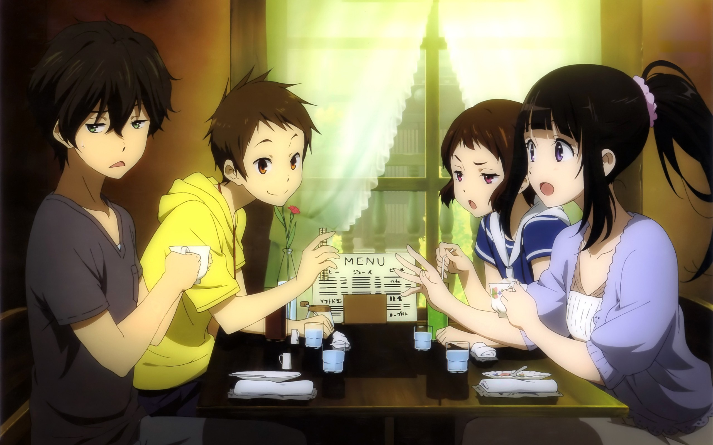

氷菓
あらすじ
何事にも積極的に関わろうとしない「省エネ主義」を信条とする神山高校1年生の折木奉太郎は、
姉・供恵からの勧めで古典部に入部する。しかし、古典部には同じ1年生の千反田えるも
「一身上の都合」で入部していた。奉太郎とは腐れ縁の福部里志も古典部の一員となり、
活動目的が不明なまま古典部は復活する。そして、えるの強烈な好奇心を発端として、奉太郎は
日常の中に潜む様々な謎を解き明かしていく。ある日、奉太郎はえるから助けを求められる。
それは、彼女が元古典部部長の伯父から幼少期に聞かされた、古典部に関わる話を思い出したいと
いうものだった。奉太郎の幼馴染で里志に好意を持つ伊原摩耶花の入部後、古典部の文集『氷菓』が
その手掛かりだと知った奉太郎は、仲間たちと共に、『氷菓』に秘められた33年前の真実に挑むことになる。
